Servidor
Copie o servidor!
Copie o servidor!
Algumas regras podem não ter sido citadas aqui, mas abusar de regras que não estão aqui resultará em punição.
A equipe XYZ tem a total permissão para banir jogadores por outros motivos/tempos fora da lista de punições.
As mesmas regras se aplicam para o Discord.
SILENCIAMENTOS
Art.1:
Desordem no chat.
Esta infração consiste no uso inadequado dos chats do servidor, a mesma é aplicada para quando o usuário utiliza Spam, Flood, Chat-Fake ou CAPS-LOCK. Abaixo estão exemplos das mesmas.
Flood: Para evitar o uso de flood basta você não repetir a mesma frase/palavra 2 vezes no chat. O jogador irá receber um warn no primeiro flood, caso repita o staff irá dar o segundo warn e será a última chance do jogador, se o mesmo repetir será silenciado por 2 horas.
Spam: Para evitar o uso de Spam é simples, o servidor contém um limite de palavras juntas, spam só é considerado cujo o mesmo usar 5 ou mais a mesma letra junto. O jogador irá receber um warn no primeiro spam, caso repita o staff irá dar o segundo warn e será a última chance do jogador, se o mesmo repetir será silenciado por 2 horas.
Caps-Lock: Para evitar o uso de CAPS-LOCK é só você não escrever uma palavra ou frase toda em maiúsculas. O jogador irá receber um warn no primeiro caps-lock, caso repita o staff irá dar o segundo warn e será a última chance do jogador, se o mesmo repetir será silenciado por 2 horas.
Chat-Fake: Se passar por um jogador, ou contar uma "mentira" o mesmo irá ser silenciado por 3 horas. Chat-Fake não tem warn.
Art.2:
Desinformação
Esta infração consiste em passar informações falsas ou incorretas para nossos jogadores (de forma intencional), com objetivo de se beneficiar da mesma ação. O player será silenciado sem warn por 12 horas.
Art.5
: Ofensa ao jogador (simples).
Esta infração consiste em um jogador acabar ofendendo outro jogador, faltando ao respeito do mesmo. Isso não é aceito no servidor, temos que ter respeito por todos seja homem, seja mulher, seja criança, seja negro ou branco. A mesma ação tem dois tipos de punição, o jogador será silenciado por 1 dia! Cujo o mesmo continuar a quebrar a regra, ofendendo o jogador dentro do servidor por tell ou fora do servidor no discord o mesmo será punido por Ofensa ao jogador (grave).
Art.6: Ameaça.
Esta infração consiste em um jogador ameaçar outro, seja por motivos fora ou dentro do jogo, o jogador será silenciado por 18 horas.
BANIMENTOS
Art.7:
Grief.
Zoar um lugar público do servidor, spawn, loja, etc...ou zoar uma base de um jogador dentro e fora do claim irá resultar num banimento de 2 dias.
Art.8:
Ofensa a Staff.
Qualquer ofensa a staff ou ao servidor o jogador será banido permanente do servidor.
Art.9:
Abuso de Bugs.
Bugs no servidor é normal, caso você ache um report ele, se você for pego usando esse bug para ter vantagens você pode levar ban de 1 semana a 1 mês caso o bug seja "simples" mas se o bug for grave você pode ser banido do servidor permanente
Art.10:
Construções inadequadas.
Uso de construções inadequadas no servidor não são permitidas, construção de coisas +18, de palavras racistas entre outras. Banimento de 1 dia.
Art.11:
Roubo.
Roubar itens de outros jogadores é proibido no servidor, o único momento que você pode pegar itens que não são seus é quando uma casa não tem claim ou os mesmos estão dropados no chão. Caso o jogador tiver provas que você roubou, ou tentou roubar você será punido por 7 dias.
Art.12:
Anti-Jogo.
Anti-Jogo no servidor resulta em punição permanente, abaixo segue alguns exemplos de anti-jogo;
Ex; usar pokemons ou luckyblocks para lagar/crachar o minecraft de outro jogador.
Art.13:
Ofensa a jogador (grave).
Como foi explicado na Ofensa a jogador (simples) existem dois tipos de ofensa no servidor, as ofensas a jogador (graves) são mais para jogadores racistas, jogadores tóxicos entre outros motivos. Os mesmos dão punição permanente no servidor.
Art.14:
PokeRadar.
O uso de PokeRadar no servidor é totalmente proibido, pois dá vantagens ao jogador, o mesmo resulta na punição permanente do servidor até blacklist da rede.
Art.15:
Divulgação.
Qualquer divulgação no servidor de outros servidores, lojas entre outros links resulta em punição permanente do servidor.
Art.16:
Falsificação de provas.
Qualquer tentativa de falsificação de provas dentro do servidor, seja para receber itens, vips, pokémons entre outros, você irá entrar direto para a blacklist do servidor e ban ip.
Art.17:
Conta Fake.
Esta infração consiste em estar com o mesmo IP online em duas ou mais contas ao mesmo tempo com o intuito de conseguir algum item no servidor para vantagens.Banimento permanente do servidor.
Art.18:
Nicks inapropriados.
O uso de nicks inapropriados do servidor irá resultar em banimento permanente do servidor.
Art.19:
Estorno de pagamento.
Ao comprar qualquer item ou vip no nosso site você aceita termos que não pode estornar o pagamento! Qualquer estorno de pagamento você será banido permanente do servidor, o mesmo só irá sair quando o fechar o estorno.
Art.20:
Uso de macro/schematic.
O uso desses meios resultará em banimento de 7 dias ou até mesmo permanente.
Art.21:
Mal uso do GTS.
Mal uso do GTS o jogador será punido por 1 dia, o mesmo se aplica tentar vender foto de pokémon + item fake.
Art.22:
Gold e silver bottle cap.
O jogador que for pego usando os itens acima será punido permanente do servidor.
Art.23:
Uso de Hack.
O jogador que for pego usando hack será punido permanente do servidor.